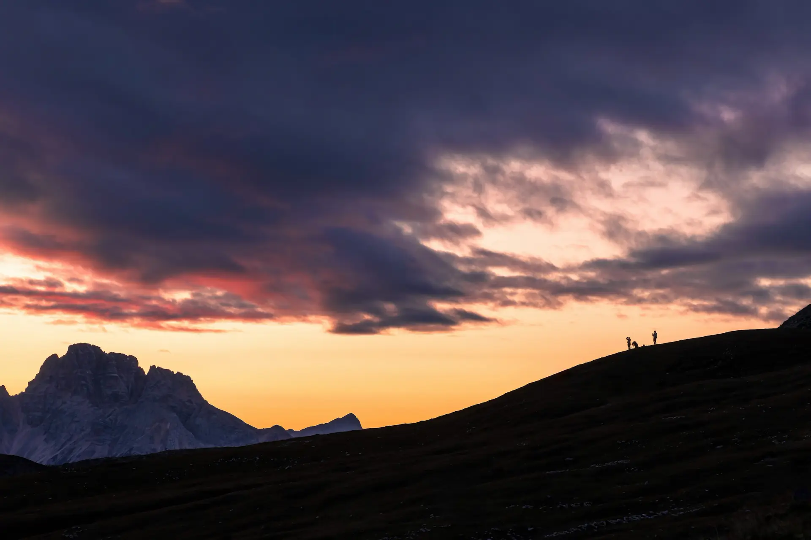
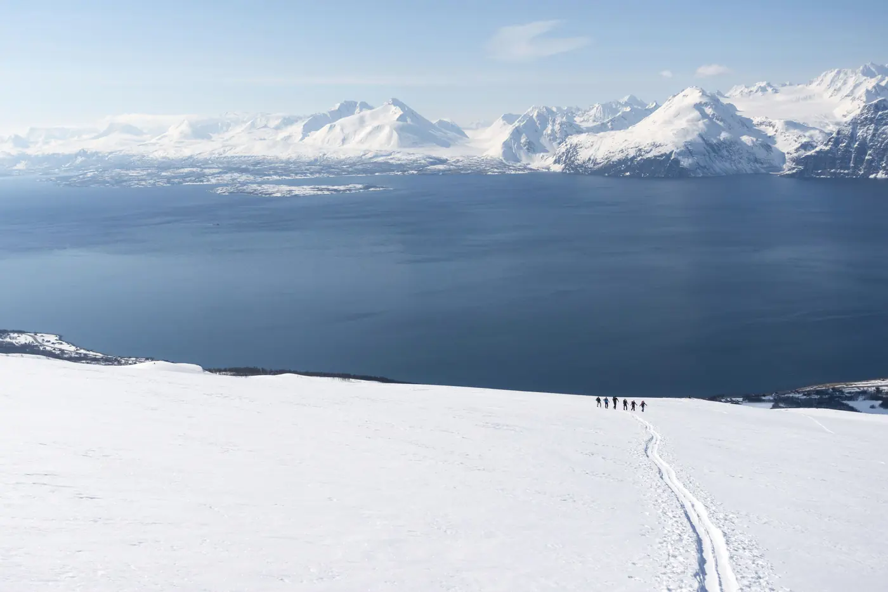
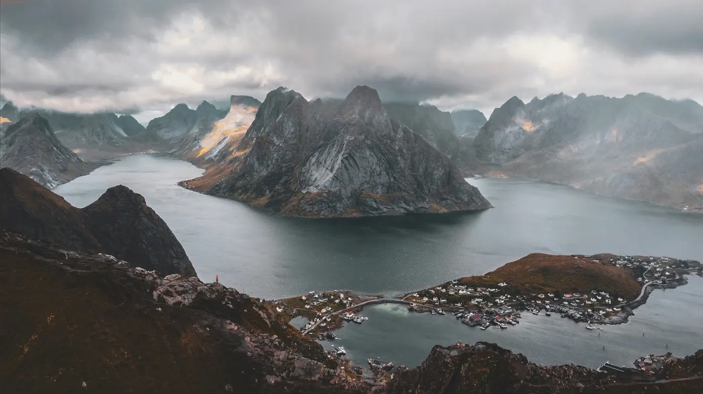
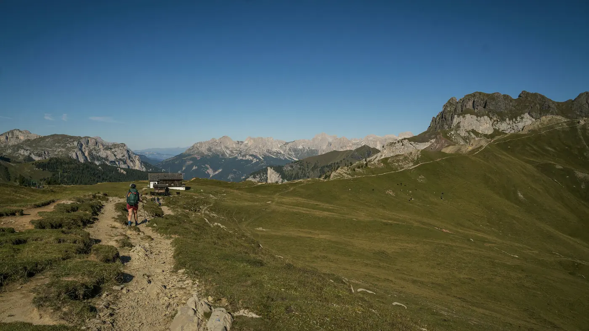
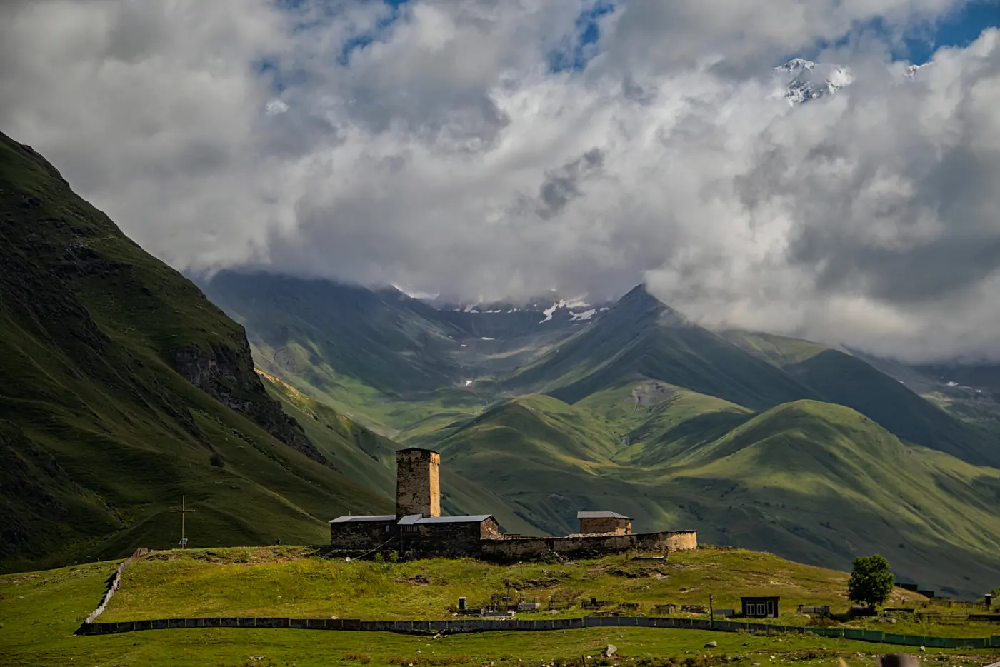
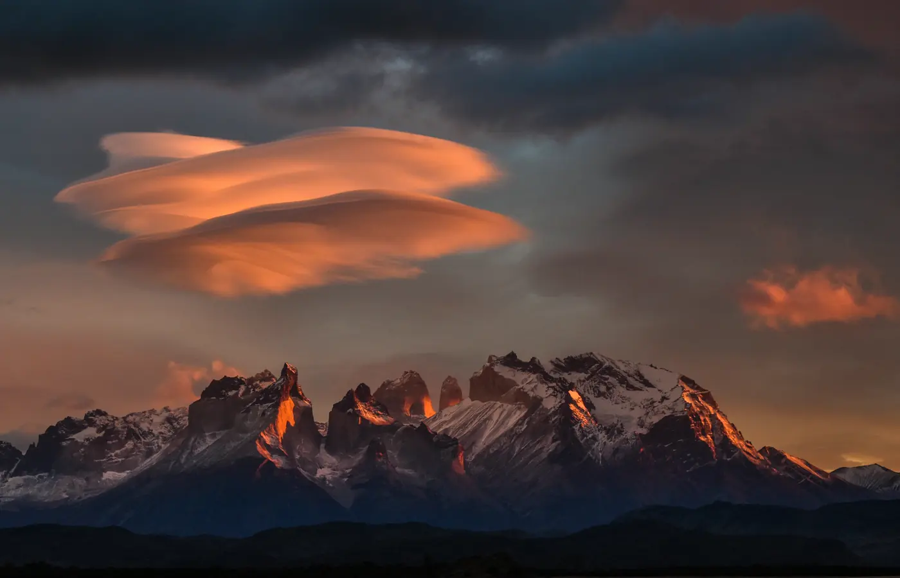
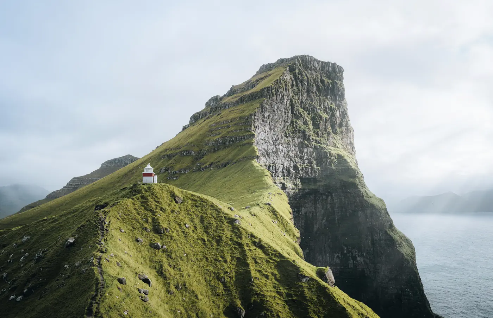

Seven to fourteen days, in order of the light.
Listed north to south, roughly the order the season opens. Every departure has eight places and two guides. Thirty-one departures in all; eleven still open.

Lyngen Alps
Nine days on the peninsula between the Ullsfjord and the Lyngenfjord, where the light in June never properly leaves. We walk late and sleep in the brightness. The high point of the range, Jiehkkevárri, is 1,834 m; we look at it a great deal and climb it only when the snow says yes.

Lofoten
Eight days island to island along the southern half of the chain, by foot and by the small boats that still run between the villages. Hermannsdalstinden, at 1,029 m, is the highest point on Moskenesøya and the one day on this route that starts before four in the morning.

Alta Via 1
Fourteen days from Lago di Braies to Belluno, about 120 km, hut to hut. Most guidebooks give it ten days; we take four more and spend them at the places on the route that are worth a second dawn. The high point is Rifugio Lagazuoi at 2,752 m.

Svaneti
Ten days through the tower villages of the upper Enguri, from Mestia to Ushguli, which sits at about 2,100 m beneath Shkhara, Georgia's highest mountain at 5,193 m. Guesthouses, not huts. Supper is a family's supper and tends to go on a while.

Torres del Paine
Eleven days around the full circuit of the massif, in March, when the park's 181,414 hectares have mostly emptied and the beech turns. The wind is real and so is the forty minutes of red on the towers most mornings. We carry tents for four of the nights.

Faroe Islands
Seven days across Kalsoy, Eysturoy and Streymoy by the old village paths, with a ferry or a tunnel between. Slættaratindur, the highest point in the islands at 880 m, is a morning's work. Kallur lighthouse, at the north end of Kalsoy, is an evening's.
What the price covers, and what it doesn't.
- Two guides, one of whom has walked the route at least six times.
- Every night's bed: huts, guesthouses, or a tent we carry.
- Every meal from the first supper to the last breakfast.
- Transfers between the end of the route and the nearest town with a railway or airport.
- Flights are yours; we will tell you which day to land.
- Insurance with mountain rescue cover, which we check before departure.
- Boots you have already walked at least 60 km in.